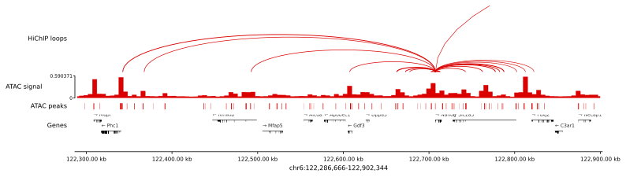

v0.9 · MIT ·
conda env create -f environment.yml
genomeblocks
Fluent building blocks for regulatory genomics — from peaks to chromatin networks in a handful of expressive chained calls.
Quickstart → View on GitHub
Why genomeblocks?
Regulatory-genomics analyses usually end up as a cocktail of bedtools, PyRanges, cooler, pyBigWig, GTF parsing boilerplate, graph libraries, and one-off heatmap code. genomeblocks unifies those pieces behind a small set of composable objects:
- LociInterval container with set algebra, slop, sort, merge, overlap queries, and signal extraction.
- TagsIn-memory CRE annotation store, queryable by boolean expression.
- GenesGENCODE / GTF / UCSC parser with enhancer-to-gene in one call.
- ArchitectureChromatin-contact graph with spreading, cliques, O/E normalization.
- signalThreaded bigWig extraction, TMM normalization, heatmaps.
- browserIGV-like, SVG-clean multi-track region viewer.
60-second example
from genomeblocks import Architecture, Genes, Loci # CREs: ATAC peaks, extended ±100 bp, sorted, merged cre = (Loci.make("atac_peaks.narrowPeak") .slop(100) .sort() .merge()) arch = (Architecture.make(cre, "loops.bedpe", r=2500) .add_mcool(cre, "hic.mcool", resolution=5000) .normalize(cre))
Everything is chainable: the output of one stage is always a first-class object accepted by the next.
Documentation map
| Section | When to read it |
|---|---|
| Installation | Setup with conda or pip. |
| Quickstart | A 10-minute tour end-to-end. |
| Concepts | The mental model — UIDs, lazy indexes, chainable APIs. |
| API Reference | Full method signatures. |